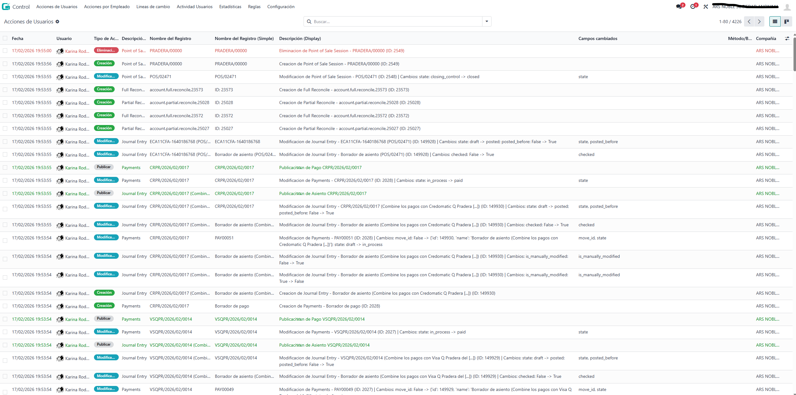
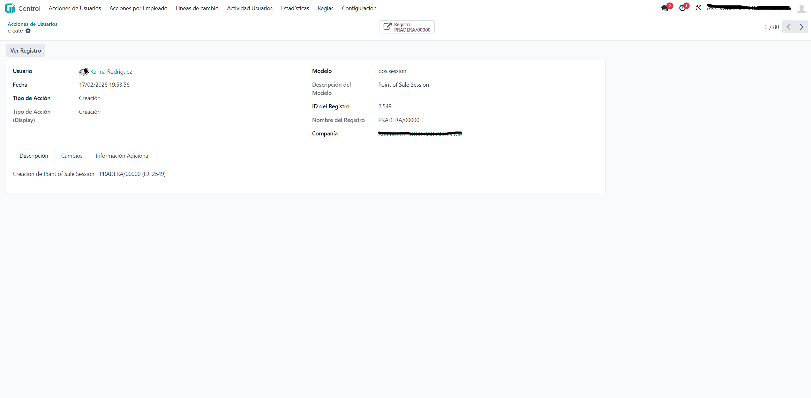
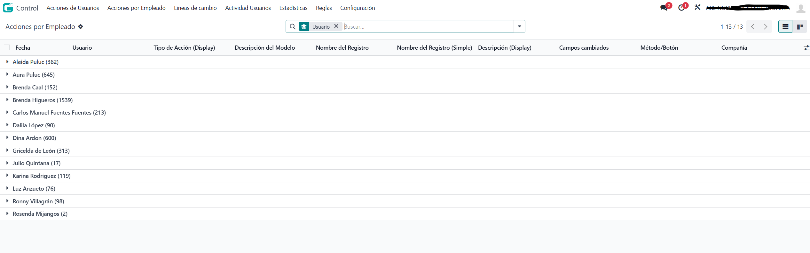
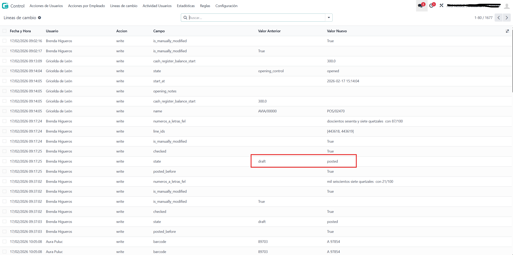
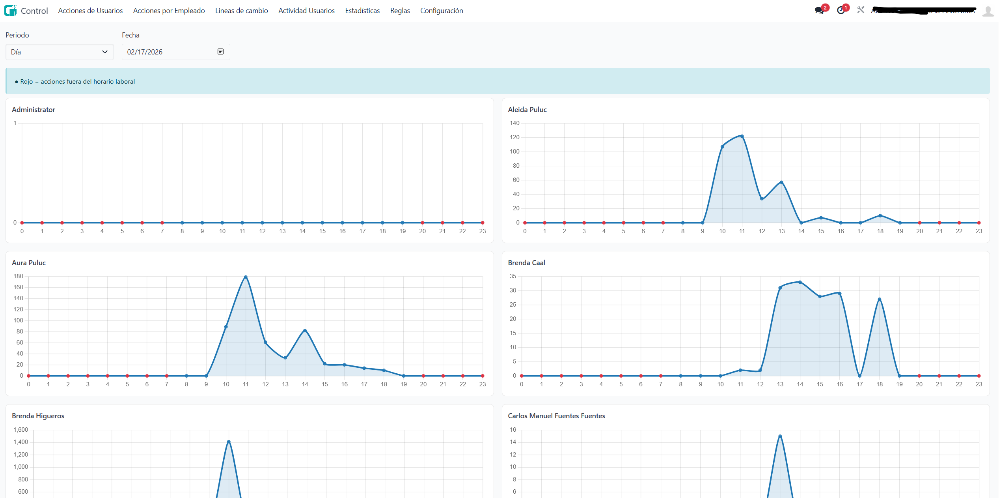
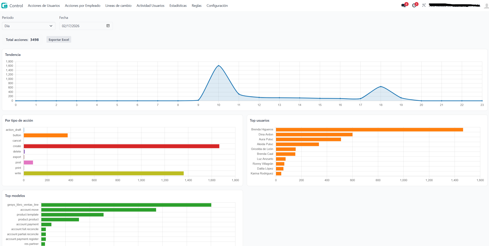
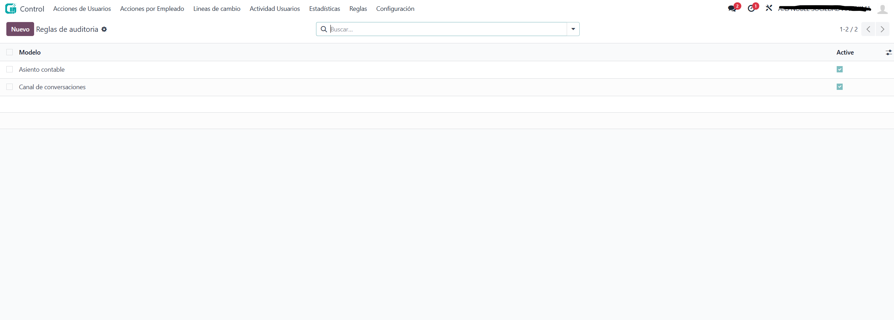
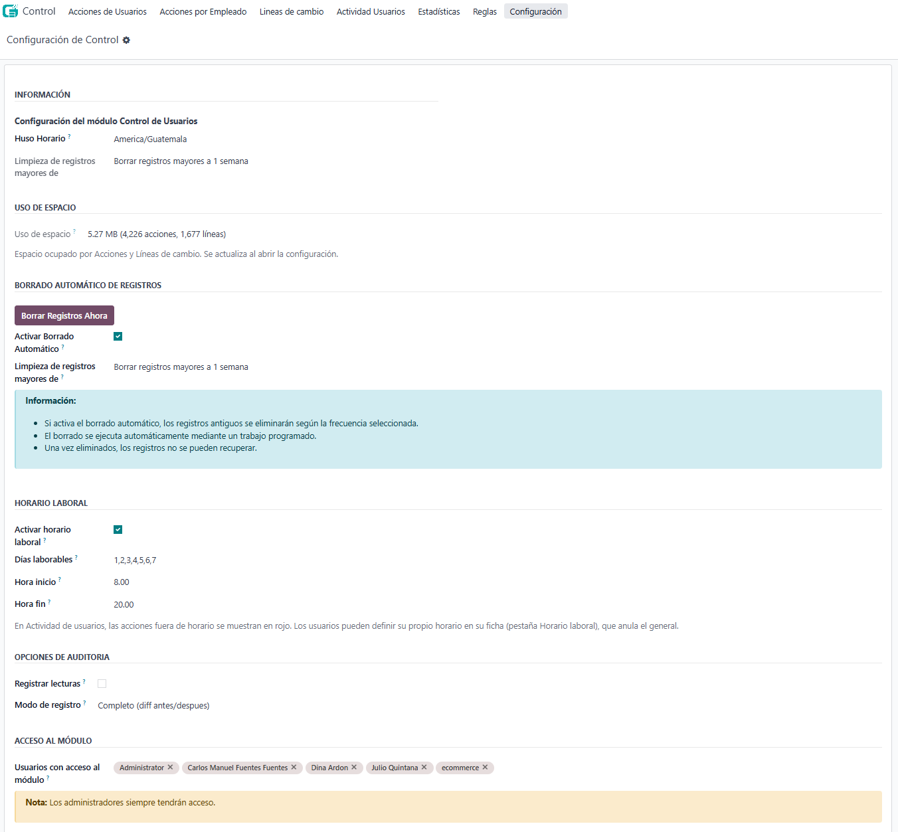

Control – User Activity Audit
Control is an audit and compliance app that records and monitors key user actions across your Odoo database. Get a clear trail of validations, postings, cancellations, exports and changes, with dashboards, statistics and PDF/Excel reports. Ideal for accountability, support and internal controls.
Screenshots









What it does
The module logs important operations (create, write, validate, post, cancel, delete, export, print, email, import) on the models you use. Each action stores user, date, model, record, type and optional field-level changes. You can browse everything in lists and forms, group by employee or date, and analyse activity with two built-in dashboards and printable reports.
Main sections (menus)
- User Actions – Full list of recorded actions with filters by date, user, type and model. List, form and kanban views; form shows description, change lines and extra data (IP, session).
- Actions by Employee – Same data grouped by user for a quick per-user overview.
- Change Lines – Field-level log: field name, old value and new value for each write, so you can see exactly what changed.
- User Activity – Dashboard with recent activity and charts (e.g. by hour or day) to see usage at a glance.
- Statistics – Second dashboard with aggregates and trends. Use it to analyse volume by period, type or model.
- Rules – Per-model rules to exclude specific users or fields from tracking (Manager only).
- Configuration – Timezone, UI language (English/Spanish), retention, automatic purge, optional read logging, log mode and manual PDF manuals (Manager only).
Reports
- PDF – Activity report, Executive report and Report by User, from the Statistics Report wizard.
- Excel – Export of statistics for further analysis.
Security
Two groups control access:
| Group | Access |
|---|
| Control / User | View user actions, change lines, activity and statistics dashboards (read-only). |
| Control / Administrator | Same as User, plus Rules and Configuration (settings, purge, manuals). |
Requirements
- Odoo 19.0
- Dependencies:
base, mail, account, web, sale, purchase
- Python:
xlsxwriter (for Excel export)
Installation
- Install the app from the Odoo Apps menu (or add the module to your addons path and update the app list).
- Assign users to Control / User or Control / Administrator as needed.
- Optionally configure timezone, retention and rules via Control → Configuration (Administrator only).
License
LGPL-3.